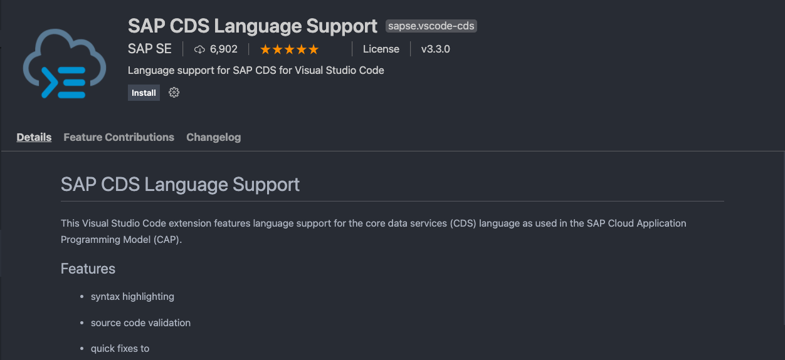
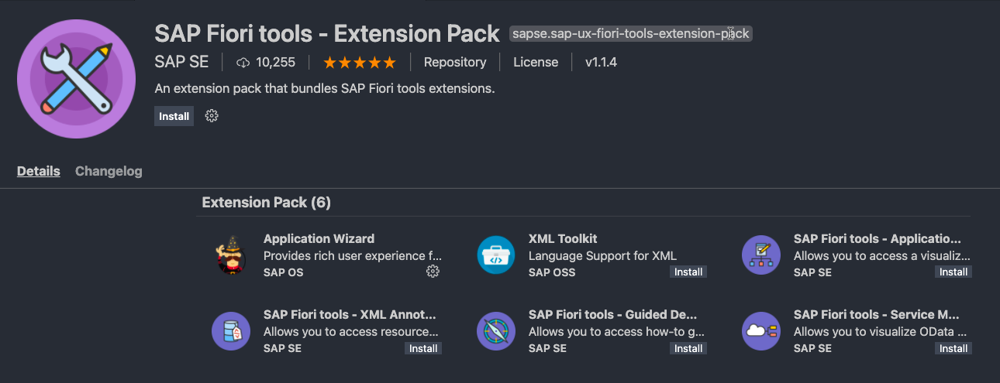
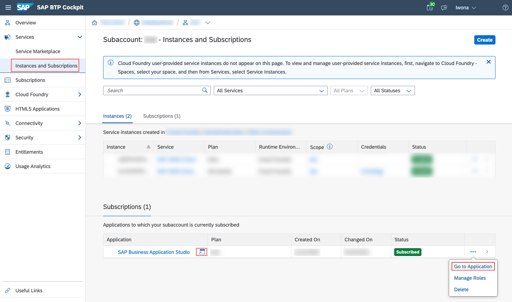
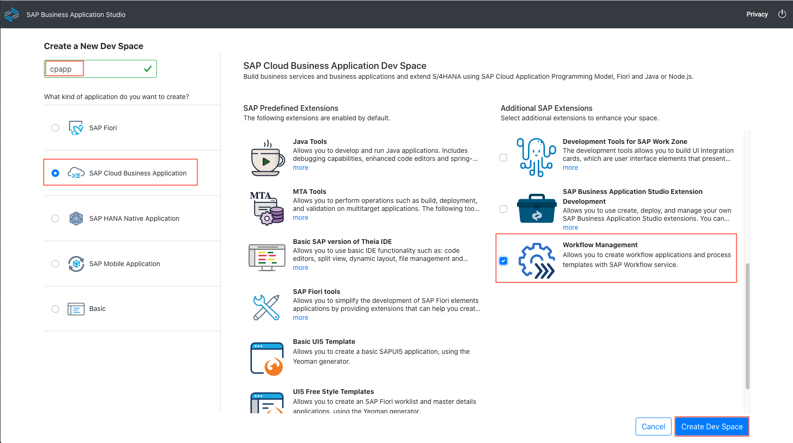

Installation
Here's an overview of the tools and software required to get started with this tutorial. This section contains all the installations that you would have to do when starting from scratch. It’s likely that you have some of the software already installed, so you can just skip those parts.
Editors
For this tutorial, you have two options:
Option 1: Using Visual Studio Code (VS Code)
Option 2: Using SAP Business Application Studio (SAP BAS) → You benefit from not having to install additional extensions, but you need an SAP BTP account.
This tutorial is using VS Code as an editor and if you want to exactly go along with the tutorial, use VS Code.
Option 1: Using Visual Studio Code (VS Code)
Command Line Interpreters
This tutorial contains a number of command line snippets that need to be pasted into a terminal. All snippets listed for macOS/Linux or without platform information can be executed in the bash or zsh, which are the default shells for these platforms. The Windows snippets are for the Windows Command Line and not for the PowerShell. Windows users are suggested to use the Git BASH instead, which is part of the Git for Windows installation and contains the basic UNIX command line tools. In the Git BASH, use the macOS/Linux snippets of the tutorial. VS Code supports the use of the Git BASH for the integrated terminal as well.
Install Git
Git is the version control system that you need to download the files of this tutorial but also to develop anything in collaboration with others really.
Check whether you already have git installed by opening a terminal and type:
git version
You should get an output like:
git version 2.x.x
If not, go to Git downloads, pick the installer appropriate for your operating system and install it.
Install Node.js
Node.js is the JavaScript runtime the CAP backend part of the application runs on and that is needed for some of the tools involved to develop the application.
In case you don't know whether you have Node.js installed and whether it has the right version (>=12), open a terminal and type:
node -v
You should get an output like:
v14.x.x
If not, go to Node.js download page, pick the installer appropriate for your operating system, and install it.
Install SQLite (Windows Only)
You need to install SQLite tools for Windows. Find the steps how to install it in the CAP documentation in section How Do I Install SQLite.
Install Command-Line Tools for Xcode (macOS Only)
Some node modules need binary modules (node-gyp). Mac users need to install the Xcode tools to be able to run them.
There are two options to install them:
- Using the command line:
xcode-select --install - Downloading Xcode (a login with your Apple ID and password is required). Search for
Command Line Tools for Xcode.
Install the UI5 Command Line Interface
A Node.js version 12 or higher is required to install the SAP UI5 CLI. See UI5 CLI for more details.
-
Check in a terminal whether you already have the UI5 CLI installed:
ui5 --version -
If you don't get a version number, install the UI5 CLI:
npm install --global @ui5/cli -
Verify that the installation was successful by running the version command again:
ui5 --version
Install the Cloud Foundry Command Line Interface (CF CLI)
This is needed if you want to use the services and applications that you create in this tutorial on SAP BTP. In this case, you need the CF CLI to deploy the services and apps to the platform. If you don't intend to deploy the service and apps to SAP BTP, you can skip this installation.
See section Installing the cf CLI in the Cloud Foundry Documentation for more details.
-
Check whether the package manager
brewis installed on your machine:If there’s an output of a version ofbrew --versionbrew, you got brew and it's best if you install the CF CLI:brew install cloudfoundry/tap/cf-cli(If you don't have
brew, you might want to consider installing brew, because it lets you install many software packages easily even outside the context of this tutorial). If you don't havebrew, you have to download a binary installer as described here. -
In either case, after the installation, check whether you get the output of a version indicating the installation succeeded:
cf --version -
Follow this tutorial to configure your API endpoint.
- Download a binary installer as described here.
- Follow this tutorial to configure your API endpoint.
- Follow the steps described here.
- Follow this tutorial to configure your API endpoint.
Install VS Code
It’s used to edit the code of the application project and it comes with a couple of so-called extensions from SAP (CAP and SAP Fiori Tools) that are also used here.
In case you don't have it, go to the Visual Studio Code homepage and install the version appropriate for your operating system.
If you work on macOS, you’ve to additionally do the following as described here. To start it like any other application and to start it from the terminal, follow these steps:
- Move VS Code from your Download folder to the Applications folder.
- Use cmd + shift + P keys to open the command palette.
- Type
Install 'code' command in PATHand choose Enter.
Add CAP Tooling
CAP provides you with all the tools to create your data model with entities and your services. It helps you tremendously to get these services running locally during development with an incredible speed. It also creates the connection to both local databases and databases in the cloud (SAP HANA). It comes with different tooling that is used in this tutorial. You can see the details in the CAP documentation. In short:
-
Install CDS development kit globally in a terminal:
npm i -g @sap/cds-dkThis process takes some minutes installing the
cdscommand that you'll use in the next steps. On macOS/Linux, you need to follow the steps as described here.If there’s an older
@sap/cdspackage already installed on your machine, you have to remove it first. You’ll be instructed to do so. If you run into problems, see the Troubleshooting guide in the CAP documentation for more details. -
To verify that the installation was successful, run
cdswithout arguments.This lists the available
cdscommands. For example, usecds versionto check the version that you’ve installed. To know what is the latest version, see the Release Notes for CAP. -
Check what versions of the CDS libraries have been installed:
cds v
Install VS Code Extensions
Install the SAP Language Support extensions for VS Code:

- Open VS Code.
- Choose the Extensions icon in the left pane.
- Type SAP CDS in the search field and choose SAP Language Support from the search results.
- Choose Install.
- Restart VS Code after the installation.
Now, the extension is installed in VS Code.
If the extension is already installed and enabled in VS Code, it is updated automatically. The VS Code extension comes with a welcome page, which shows latest release notes of CAP. It starts automatically whenever an update arrives for the extension. Later, you can open the page through the command CDS: Show CAP Release Notes.
Learn more about the features of the extension in this short demo and see the features and commands in the CAP documentation.
Install SAP Fiori Tools Extension Pack
SAP Fiori Tools are a number of extensions for VS Code. They mainly support you in developing SAP Fiori Elements apps. In this tutorial, we use the so-called SAP Fiori application generator to create an SAP Fiori Elements app, you need this for section Create an SAP Fiori elements-based Application of this tutorial.
Additional Documentation
(For macOS only) You need to install the code command in PATH.
-
Open the Command Palette (
⇧⌘P) and typeshell commandto find the Shell Command:Install 'code' command in PATH.
-
Restart the terminal for the new
$PATHvalue to take effect.
Install the SAP Fiori tools - Extension Pack including six extensions for VS Code.

- Open VS Code.
- Choose the Extensions icon in the left pane.
- Type SAP Fiori tools in the search field and choose SAP Fiori tools - Extension Pack from the search results.
- Choose Install.
- Restart VS Code after the installation.
After a restart of VS Code, you can check for the tools by invoking View → Extensions and then scrolling through the list of Enabled extensions. They all start with SAP Fiori tools.
If the extension is already installed and enabled in VS Code, it's updated automatically.
Install SAPUI5 Freestyle App Templates Using Yeoman
SAPUI5 comes with templates that kick start your development for SAPUI5 freestyle app development. You need these if you want to carry out the Create a Freestyle UI5 application section. SAPUI5 templates are based on Yeoman, a tool for scaffolding web apps. You need to install it first.
-
Check in a terminal whether you already have Yeoman installed:
yo --version -
If you don't get a version number, install Yeoman:
npm install -g yo -
Now, you can go ahead and install the SAPUI5 templates:
npm install -g yo @sapui5/generator-sapui5-templates -
Test whether everything works:
yo --generators
If the @sapui5/sapui5-templates generator is listed in the terminal, you're ready to go.

Option 2: Using SAP Business Application Studio
As mentioned in the section Editors, using SAP BAS is optional and the tutorial uses VS Code as an editor. SAP Business Application Studio (SAP BAS) is the successor of the SAP Web IDE. Like the SAP Web IDE, it’s mostly an online IDE but a local version is also available. Many of the so-called extensions (separate, optional software packages that add a certain functionality to the IDE) that are available for Microsoft's Visual Code are also available for SAP BAS and vice versa.
If you decide to use SAP BAS, your benefits are:
- You don't have to install or update any of the packages below yourself. The all come with your BAS instance.
- In some cases, you have additional productivity features that are available only in SAP BAS but not VS Code.
However, if you go for SAP BAS, you first have to get access to SAP BTP, it can only be used with a user there. At a later stage of the tutorial, this is required anyway, however, you can easily perform the steps to create a CAP service with its own persistency and access to a remote SAP S/4HANA system, as well as an SAP Fiori Elements and a SAPUI5 application on top of the service without any access the SAP BTP and only develop these parts locally. If you’re looking for a deployment to SCO (obviously), using the SAP Fiori launchpad, develop a multi tenant app as well as using workflow, you need SAP BTP access later anyway.
Set Up Business Application Studio in an SAP BTP Trial Account
If you don't have an SAP BTP account already, see here for the choices and how to set it up. Afterwards you either have a Trial account or a Canary or Live account.
If you're using a Canary or Live account, you need to create an Entitlement for SAP BAS as well.
- Go to SAP BTP Cockpit Trial.
- Choose Enter Your Trial Account.
- Choose the subaccount trial.
- Go to SAP BTP Cockpit and choose the Global Account that you’ve created.
- Choose your subaccount.
For all account types:
- In your subaccount, choose Service Marketplace in the left-hand navigation.
- Search for SAP Business Application Studio.
-
Choose Create.

-
Navigate back to your subaccount overview with the breadcrumbs.
- On the left-hand pane, expand Security and then choose Trust Configuration.
- Choose Default identity provider (Trial) or SAP ID Service (Canary/Live) in the list that comes up.
- Enter your E-Mail address with which you’re registered for SAP BTP.
- Choose Assign Role Collection and then add the following role collections one by one, by choosing Assign Role Collection.
Business_Application_Studio_AdministratorBusiness_Application_Studio_DeveloperBusiness_Application_Studio_Extension_Deployer
- Navigate back to your subaccount overview with the breadcrumbs.
- On the left-hand pane, choose Instances and Subscriptions.
-
Choose Go to Application in the Subscriptions category for SAP Business Application Studio application or choose the
 icon.
icon.
-
Log in with your SAP BTP account user and password.
-
Save the URL in your favorite link list, you'll need this URL again.
-
On the Dev Spaces selection UI, choose Create Dev Space and enter
cpappas the Dev Space name. -
Choose SAP Cloud Business Application as the application kind.
-
Choose Workflow Management as additional SAP Extensions you want to install.
-
Choose Create Dev Space.

Wait until the Dev Space has been created. This can take some time.
Open the Dev Space in SAP BAS
- Open the Dev Space by choosing its name.
- In the opened editor, choose Open Workspace.
- Select the
projectsfolder in the Open Workspace dialog. - Choose Open.

SAP BAS will refresh and select the projects folder as the workspace root.